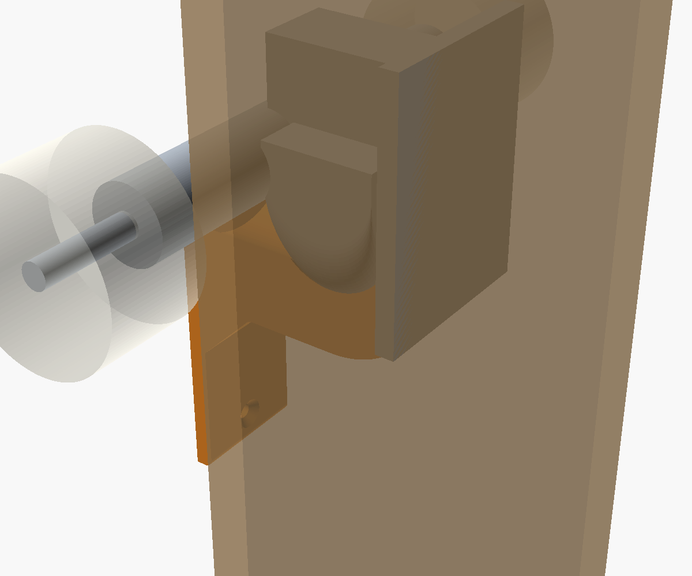
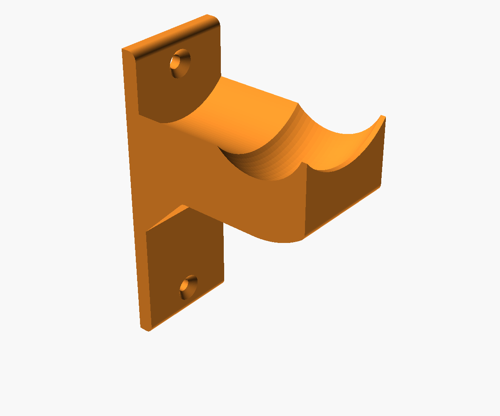
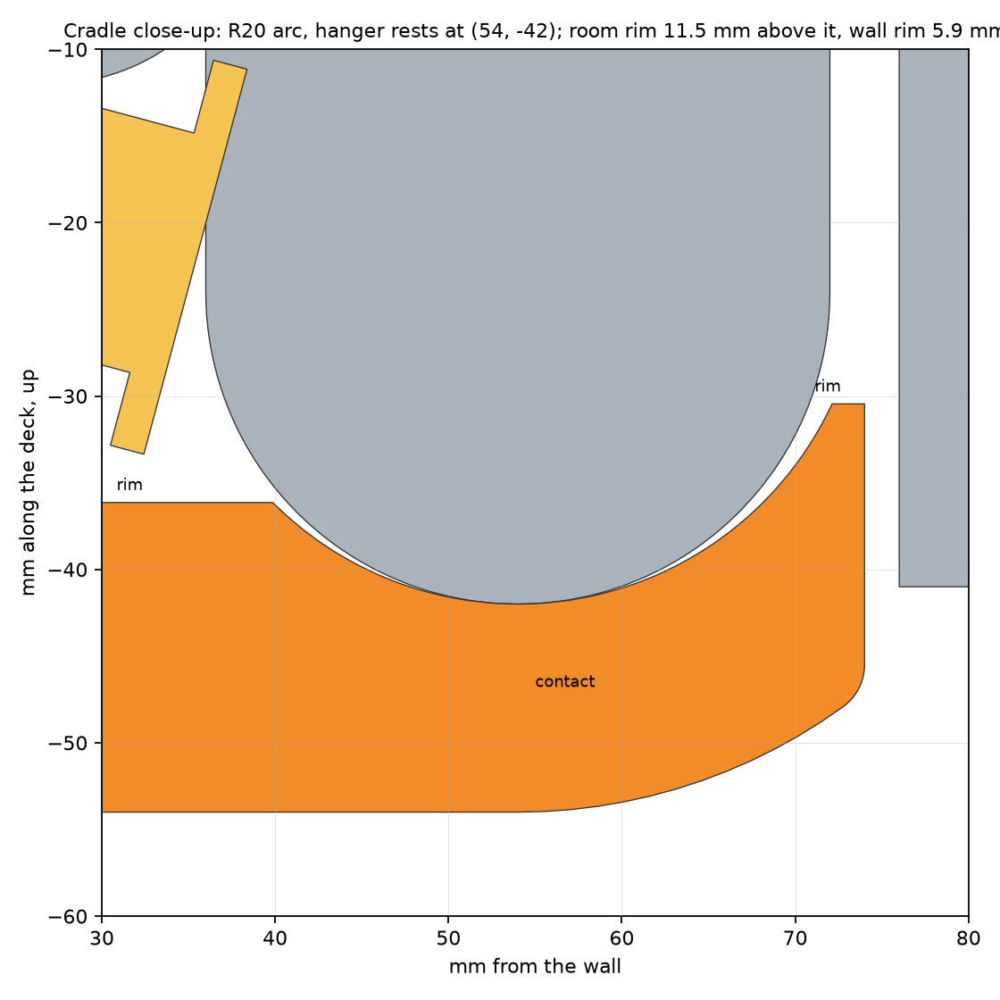
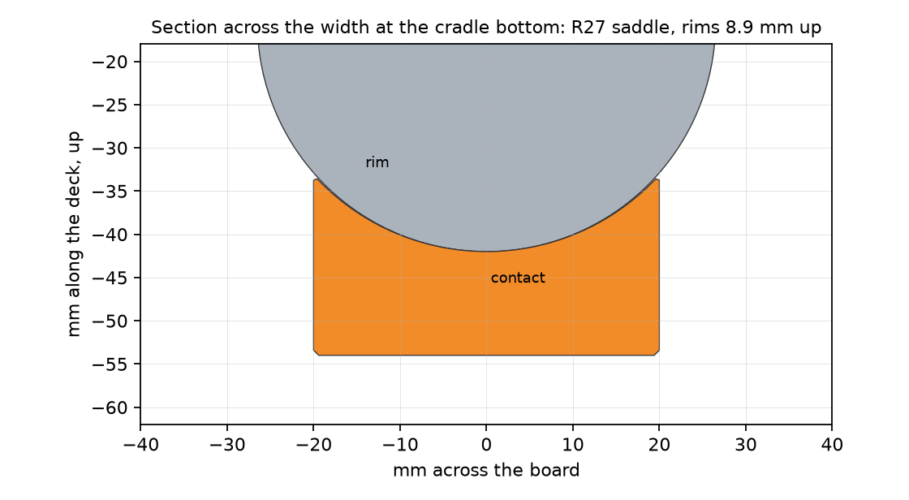
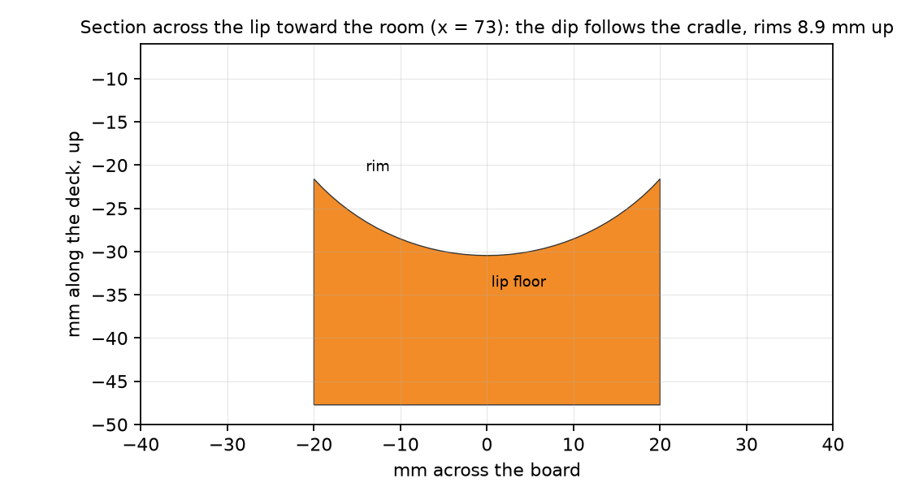
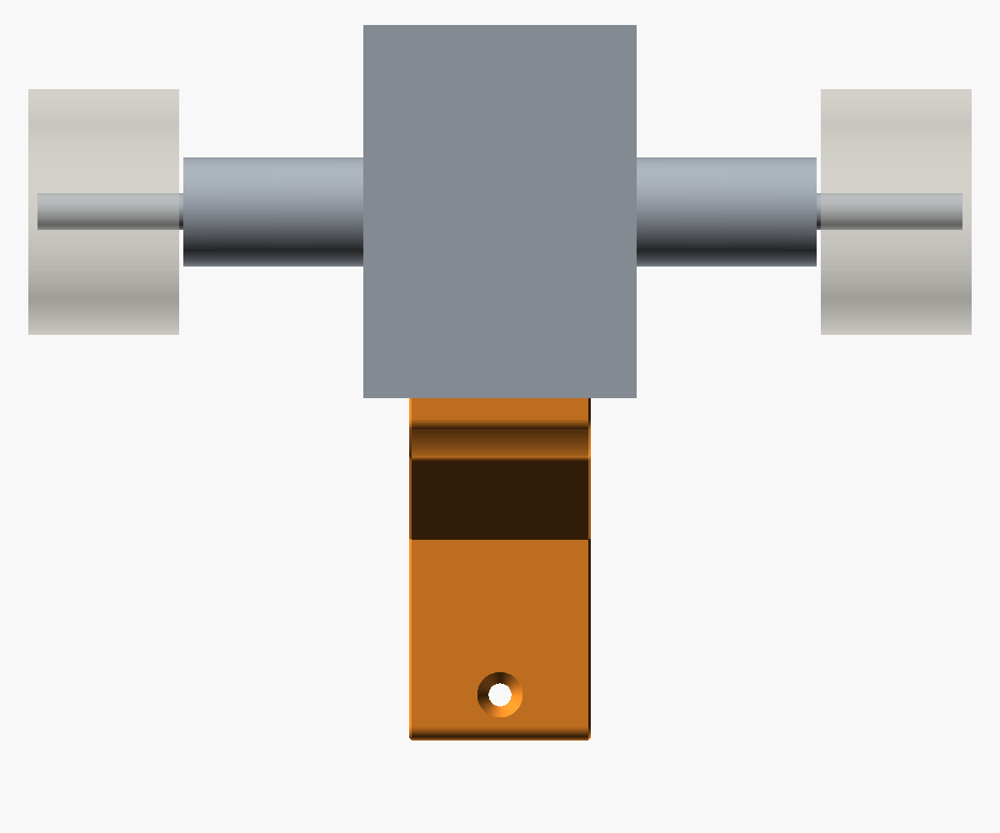
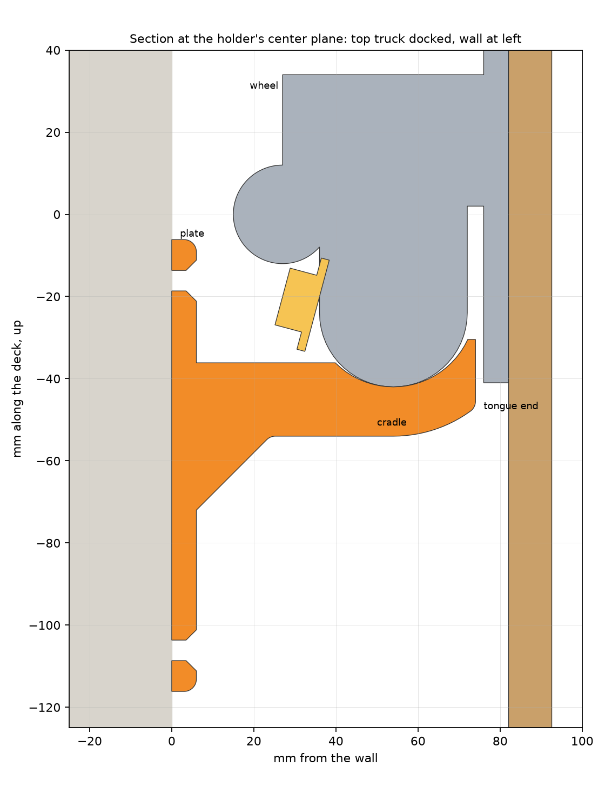
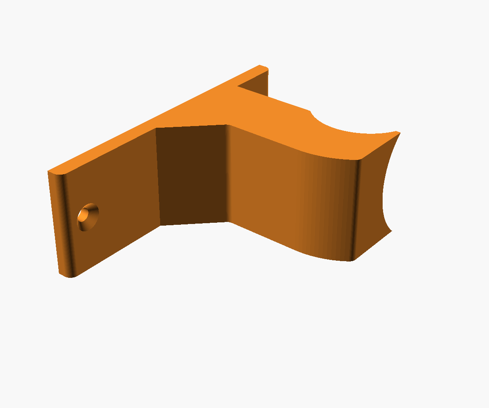

Concept A, built 2026-10-04 from the Skate Hook Studio prompt and your three notes from the viewer: a curved cradle instead of the tilt and lip, a wider tongue with a deeper curve, and a rounded dip in the front lip. The model is in the CAD viewer and the print 3MF is sliced.
The hook as built

Top truck docked. The hanger's center body sits in the cradle; the nut rides above it. Wheels and deck drawn translucent.

The holder alone: 40 mm wide, plate 6 x 110 mm, tongue reaching 74 mm from the wall, scoop underside, gusset, 3 mm roundovers.
What changed from the tool's prompt
Cradle, not tilt plus lip. The tongue top is an arc of R20 around a center 2 mm above the hanger's half-round, so the hanger drops in and nests. Its rim toward the room is the bump stop; the wall and the lower wheels stop the other direction.
Wider and deeper. Width 30 to 40 mm. The room rim spans 65 degrees of arc (was 55), the wall rim 45 (was 40; 50 brought the wall-side shelf within 1.5 mm of the kingpin washer, so it was eased). The R27 bowl across the width now rises 8.9 mm at the rims instead of 4.6.
The lip dips too. The R27 saddle is carried along the whole cradle, so the lip toward the room has the same rounded dip as the floor and the hanger's dome is cradled there as well. Across the width the rims stand 8.9 mm above the center line everywhere.
Reach 74 mm, 2 mm short of the baseplate and 8 mm from the deck.
Solid pads at the screws. Your rule: 100% infill around every screw hole. Adding that check caught a modeling slip that no render showed: the bowl cutter had started 1 mm inside the plate, leaving the plate 5 mm thick above the tongue and the upper countersink shallow. Fixed, with a probe in the model so it cannot recur.
Docking and hold, measured on the proxy mesh
Docking is a straight lowering; the hanging load pulls the same way, so the load drives the part in and the only way out is a lift. The test slices the holder and the truck every 0.5 mm across the width and moves the truck through poses, no friction counted. The hanger is drawn as a dome, rounded both ways at once, which is the shape the dish is cut for.
Rests where modelled0.0 mm
Drop-in, truck grown 0.2 mmfree
Bump slack, room and sideways0.5 mm
Lift to leave toward the room11.5 mm
Lift to leave sideways8.5 mm
Wall-side rim5.9 mm
If your hanger is blockier than a dome (flat across its underside away from the center), it rests 6.5 mm higher on the bowl's shoulders instead of at the bottom, and the holds drop to 5.0 mm toward the room and 2.0 mm sideways. The real shape is between the two; a look at your truck from below tells which it is closer to.
Sections through the cradle

Center-plane cut. The room rim's inner face leans 25 degrees inward over the floor: a hook, not a draft. Nut and washer (yellow) clear the wall-side shelf by 2.8 mm; the baseplate (right) is 2 mm from the tongue end.

Cut across the width at the cradle bottom. The hanger's rounded underside (drawn R26.5) sits in the R27 bowl, touching at the center only.

Cut across the lip toward the room: the same dip, rims 8.9 mm up, so the dome is cradled at the lip as well.

From the room, x-ray through the deck: the 40 mm holder between the wheels, the bowl seen end-on under the hanger body.

The whole hook at the center plane: plate on the wall at left, two countersunk screw holes, gusset, scoop tongue, truck and deck.
Printing

On its side, 74 x 110 mm footprint, 40 mm tall. Layers run along the plate and the tongue, so the tongue's bending load is carried within layers. No supports: the bowl prints as a shallow concave in each layer and the horizontal screw holes bridge at 5 mm.
Setting
Value
Nozzle
0.6 mm high flow (installed)
Material
PETG Basic
Process
0.30 mm Standard, 3 walls, 20% gyroid
Sliced
1 h 4 min, 50.1 g, 133 layers, 250 / 70 °C
Screw pads
100% infill 25 mm around each hole (modifier part); G-code reads 0.76 in the pads, 0.18 in the plain plate
Skirt and brim
2-loop skirt, no brim, no supports
Screws
two #8 countersunk, 90 mm apart, into a stud or anchors
Check on your board before printing
The truck in the model is an Independent-size estimate, plus or minus 3 mm. The cradle has 2 mm of radial clearance and the washer has 2.8 mm over the shelf, so these four numbers decide whether it drops on.
Measure on the top truck
Model assumes
What it sets
Deck underside to wheel face
82 mm
how far the deck hangs off the wall, and so the tongue reach
Deck underside to the far face of the hanger's center body (the bowl rim around the nut)
46 mm
where the cradle sits in from the wall
Hanger center body: how far it reaches toward the board's middle from the axle, and its width across
42 mm, 53 mm
cradle position and the bowl radius
Deck underside to the lowest edge of the cup washer, and nut top
about 49 mm, 55 mm
clearance over the wall-side shelf
Files
projects/Skateboard-wall-holder/skateboard_holder.py: the parametric model with its self-checks; every number above is a constant at the top.
projects/Skateboard-wall-holder/skateboard-holder.3mf: the Bambu Studio project, verified by a CLI round trip and a real slice. Open it as is; do not reselect the printer preset in Studio, that resets the process.
projects/Skateboard-wall-holder/skateboard-holder.stl: print orientation, on Z = 0.
pipeline/hold_check.py, pipeline/section_fig.py, pipeline/renders.py: the checks and figures on this page.